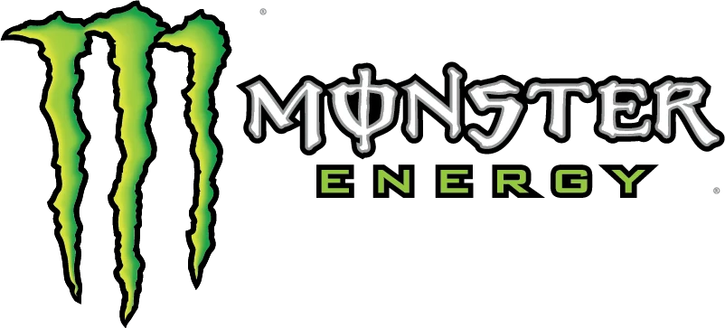
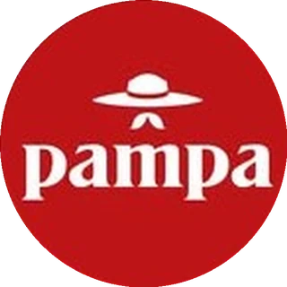
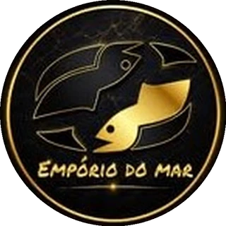
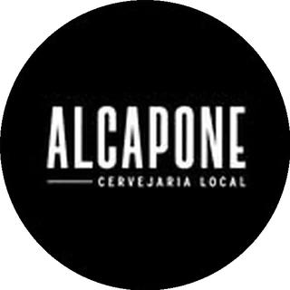

Minha história
Tudo começou com uma câmera, um skate e um sonho que eu ainda nem sabia que tinha.
Minha história com a fotografia começou muito antes de eu imaginar que viveria dela.
O garoto, o skate e a Yashica
Eu tinha apenas 14 anos quando passava horas admirando as fotografias das revistas nacionais de skate. Não eram apenas manobras congeladas no papel. Eram histórias, movimentos, emoções e uma liberdade que eu queria aprender a capturar.
Foi então que, com a câmera analógica Yashica do meu avô nas mãos, comecei a fotografar meus amigos andando de skate. Sem equipamentos profissionais, sem grandes pretensões. Apenas um garoto curioso tentando eternizar aquilo que seus olhos enxergavam.
A primeira tela
Aos 15 anos, meu pai adquiriu uma Sony Cyber-shot com display integrado. Para mim, aquilo parecia algo extraordinário. Pela primeira vez, eu podia visualizar imediatamente as fotos e os vídeos que produzia. Passei a experimentar cada vez mais, registrar tudo ao meu redor e me envolver profundamente com aquele universo.
Foi nessa época que comecei a me viciar no mundo da fotografia e do vídeo.
Misselândia no YouTube
Aos 17 anos, criei meu canal no YouTube, o Misselândia. O canal existe até hoje e representa uma parte importante da minha trajetória, porque foi onde comecei a explorar a criação de vídeos, compartilhar ideias e desenvolver ainda mais a minha relação com o audiovisual.
Naquela época, eu não sabia, mas estava começando a construir o meu futuro.
Da curiosidade à paixão
Aos 23 anos, comprei minha primeira câmera. E o que antes era curiosidade se transformou em paixão. Comecei a enxergar beleza nos pequenos detalhes: uma paisagem, um prato de comida, uma rua desconhecida, os lugares por onde passava.
Logo surgiram os primeiros trabalhos. Chás de fraldas, aniversários, eventos corporativos e tantas outras histórias que tive o privilégio de registrar.
Cada trabalho me ensinava algo novo. Cada pessoa que confiava em mim me fazia acreditar um pouco mais naquele caminho.
❚❚ PAUSE▶ PLAY
Mas a vida ainda estava preparando uma grande transformação.
Durante a pandemia, quando o mundo parecia ter apertado o botão de pausa, decidi continuar em movimento. Mergulhei nos estudos de marketing digital, comunicação e social media.
Foi quando percebi algo que mudaria completamente a minha maneira de trabalhar
Uma boa imagem pode emocionar. Mas, quando existe estratégia por trás dela, também pode transformar negócios.
O estúdio
Aos 31 anos, nasceu a Misselândia, meu estúdio criativo e audiovisual.
E sabe como tudo começou?
E uma vontade gigantesca de fazer dar certo.
Não existia uma grande estrutura. Não existia uma equipe. Existia apenas a certeza de que eu precisava transformar aquilo que amava em algo maior.
Marcas que confiavam no meu olhar
Em 2022, além de realizar meu primeiro trabalho para a Monster Energy, ampliei meu networking por meio da agência Siena Digital. Essa parceria abriu novas oportunidades e me permitiu começar a atender às demandas de vídeos criativos para os clientes da agência.

Lembro da responsabilidade que senti. Eram marcas que confiavam no meu olhar e no meu trabalho, e cada novo projeto representava uma oportunidade de transformar ideias em conteúdos audiovisuais relevantes e criativos.
Naquele momento, percebi o quanto havia caminhado desde aquele garoto de 14 anos com a Yashica do avô e desde os primeiros vídeos gravados com a Sony Cyber-shot do meu pai.
Mas também entendi que ainda tinha muito para aprender.
Imagens que despertam desejo
Em 2023, decidi ir além. Investi em equipamentos, ampliei ainda mais minha rede de contatos, aprofundei meus conhecimentos em produção audiovisual e passei a estudar cada vez mais a criação de vídeos dinâmicos e conteúdos estratégicos para a internet.
Foi nesse caminho que encontrei outra paixão: transformar produtos, especialmente a gastronomia, em imagens que despertam desejo e geram resultados.
Comecei a trabalhar com negócios locais, restaurantes e deliveries. Descobri que por trás de cada empresa existe alguém que também começou com um sonho, que enfrenta desafios e que deposita esperança no próprio negócio.



E poder contribuir para o crescimento dessas histórias passou a dar ainda mais sentido ao meu trabalho.
O mesmo garoto, com outra missão
Hoje, tenho o privilégio de atender marcas de diferentes segmentos, unindo fotografia, vídeo, criatividade e estratégia para ajudar empresas a se comunicarem melhor, conquistarem clientes e venderem mais.
E, mesmo depois de tantos anos, uma coisa continua exatamente igual:
Ainda sou aquele garoto apaixonado por capturar o mundo através de uma câmera.
A diferença é que hoje, além de registrar histórias, eu ajudo a construir novas.

E se você chegou até aqui, talvez a próxima história que eu tenha o prazer de contar seja a da sua marca.
Prazer, eu sou Missel.
Criador da Misselândia. Apaixonado por imagens, histórias e ideias que se transformam em resultados.
Contar a história da sua marca